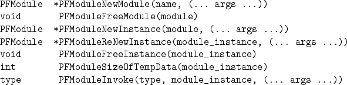

The routines for using modules are as follows (note: these are actually macros which invoke the module functions outlined in 4.2 below):

The functions PFModuleNewModule and PFModuleFreeModule create and destroy modules, respectively. The argument name is the name of the module as described in 4.2 below.
The functions PFModuleNewInstance and PFModuleFreeInstance create and destroy module instances, respectively. The function PFModuleReNewInstance renews (or re-initializes) a module instance. Note that even though this routine has a return type of (PFModule *), it should be treated as if it were a void function (the returned module instance is the same as the argument module_instance). The argument lists for the PFModuleNewInstance and PFModuleReNewInstance are identical. A non-NULL argument indicates that this, and any module instance data associated with it, is to be modified. A NULL argument indicates that this instance data is not to be changed.
The function PFModuleSizeOfTempData returns the number of contiguous doubles needed by the module instance as temporary data. This routine must be passed a module instance which has already had particular instance parameters initialized. Specifically which parameters is module dependent, but typically in they are Grid structures and the Problem structure.
The function PFModuleInvoke is the function used to actually invoke a module instance.